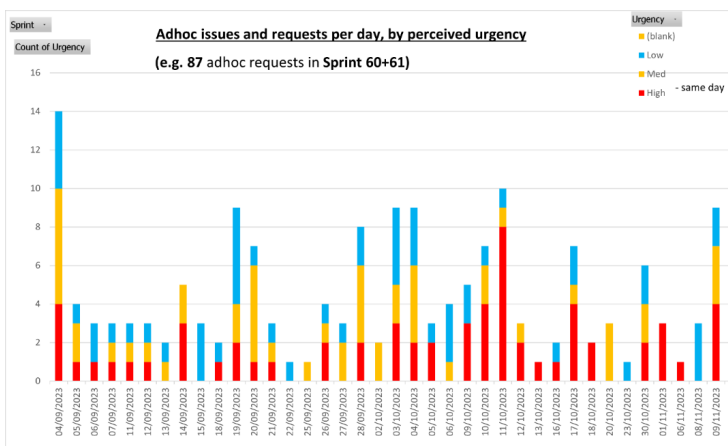
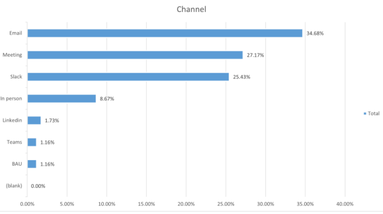
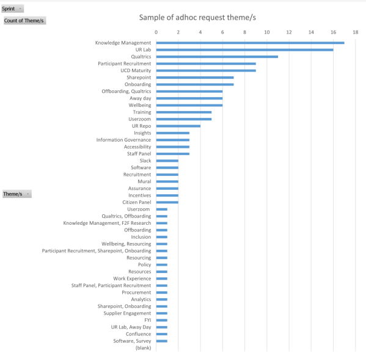

This post follows on from my recent monthnotes.
Our team we’re really overwhelmed with a whole variety of requests from colleagues and this needed to be explored…

Exploring the impact of ‘adhoc’ requests
What is an adhoc request? I came up with…
“Any request that isn’t part of our Sprint plans, or doesn’t fall into our roadmap projects.
It takes more than 5 minutes to solve, and requires more than sending a simple email or slack response.”
Examples such as:
- calls - unplanned (e.g. could be with teams, suppliers, or profession wide)
- providing policy guidance, or specialist knowledge,
- providing tech support, e.g. resolve directly, or raise service incidents
- unplanned visits to UR lab,
- requests to support other teams (e.g. write a survey)
- mandatory training
Discovering adhoc requests
To explore the impact of adhoc requests, I’ve started tracking them meticulously
It turns out this is a whole separate stream of work - what seemed like a trickle - you maybe don’t notice it day to day, but really it is an additional to-do list, or a whole hidden backlog of problems…
For example, in one day, I received 10 adhoc requests
- I tracked where they were from, e.g. in person, on Slack, by email, in meetings, etc.
- 8 of 10 requests needed resolving on the same day - disrupting all my planned work.
- I called these ‘high’ urgency requests
- In total, about 50% of my time per week was spent dealing with a very longtail of urgent day-to-day problems that other teams have…
See charts below for summary:

- Average around 5-6 per day, with a peak of 14
- Most requests are high urgency and need same day support

- Email, meetings and slack are most common source

- Knowledge management, UR Lab, Software, Participant Recruitment, UCD Maturity, Sharepoint, Onboarding and Offboarding are the top categories
How might we stop this tide of disruption?
In some ways, that is impossible task.
There will always be things that the Ops team need to support or fix (software issues, incidents, where’s that? etc).
However, we’re working hard on reducing adhoc requests.
This depends on being more consistent with how we manage requests, improving processes within processes within processes
To make this work, we rely on colleagues searching, finding, reading, understanding and following guidance before contacting the UCD Ops team.
This in itself is a challenge, “we need to eat our own dog-food”
I.e. follow research and design good practice, create content that colleagues can easily consume.
It can take days or weeks to get to a point where new guidance has been created, tested, rewritten, trialed, published, communicated.
The benefit is that we won’t have as many of these requests in the future.
“Start by thinking how to scale up a change/impact. By going a bit slower, maybe we can go further?”
Here is a proposed process flow for adhoc request:
Adhoc request discovery workflow:
receive requests
- save request in spreadsheet/backlog/tool
- tag the request (channel, requestor, urgency)
- analyse request (themes, timing data)
- monitor and prioritise themes in backlog
monitor and test processes
- gather data and analytics
- regularly run incident/sev testing
- keep iterating and refining the backlog
Adhoc request resolution workflow:
initial response
- simple request - respond directly over email/slack
- complex requests - Have a call to explore the issues
draft guidance:
- draft a new policy, guidance or template (using info above)
- review change with a working group - stakeholders and experts
- test with colleagues - can they find it, does it make sense?
- iterate the thing
communicate guidance
- with leadership - who should own the change in their teams
- line managers to review guidance
- line managers to self-manage within teams going forward
create automated responders
- principle - identical requests should take zero time
- Email filters
- Slackbot responses
- LLM/GPT - search policy and guidance
TL;DR
Somethings to think about:
A large of time is spend on adhoc requests and ‘hidden work’; this rarely gets acknowledged
Teams need to plan for time spent dealing with adhoc requests/ BAU/ incidents
Adhoc requests and incidents impact on roadmap projects and other commitments
Ops teams can iterate their processes; yet doing more with less is rarely sustainable
Teams need to have the right tooling, skill/straining (and resources/funding) to scale up their impact!